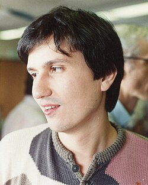

Maxim Kontsevich | |
|---|---|
| Максим Концевич | |
 Kontsevich in 1994 | |
| Born | 25 August 1964 |
| Citizenship | Russia France |
| Alma mater | Moscow State University University of Bonn |
| Awards | EMS Prize (1992) Otto Hahn Medal (1992) Henri Poincaré Prize (1997) Fields Medal (1998) Crafoord Prize (2008) Shaw Prize (2012) Breakthrough Prize in Fundamental Physics (2012) Breakthrough Prize in Mathematics (2015) National Academy of Sciences (Foreign Associate) (2015) |
| Scientific career | |
| Fields | Mathematics, Mathematical physics |
| Institutions | Institut des Hautes Études Scientifiques University of Miami University of California, Berkeley |
| Don Bernard Zagier | |
Notable students | Serguei Barannikov |
Maxim Lvovich Kontsevich (Russian: Макси́м Льво́вич Конце́вич, IPA: [mɐkˈsʲim ˈlʲvovʲɪtɕ kɐnˈtsɛvʲɪtɕ] ⓘ; born 25 August 1964)[1] is a Russian and French[2] mathematician and mathematical physicist. He is a professor at the Institut des Hautes Études Scientifiques and a distinguished professor at the University of Miami. He received the Henri Poincaré Prize in 1997, the Fields Medal in 1998, the Crafoord Prize in 2008, the Shaw Prize and Breakthrough Prize in Fundamental Physics in 2012, and the Breakthrough Prize in Mathematics in 2015.[3]
He was born into the family of Lev Kontsevich, Soviet orientalist and author of the Kontsevich system. After ranking second in the All-Union Mathematics Olympiads, he attended Moscow State University but left without a degree in 1985 to become a researcher at the Institute for Information Transmission Problems in Moscow.[4] While at the institute he published papers that caught the interest of the Max Planck Institute in Bonn and was invited for three months. Just before the end of his time there, he attended a five-day international meeting, the Arbeitstagung, where he sketched a proof of the Witten conjecture to the amazement of Michael Atiyah and other mathematicians and his invitation to the institute was subsequently extended to three years.[4]
The next year he finished the proof and worked on various topics on mathematical physics and in 1992 received his Dr. rer. nat. at the University of Bonn under Don Bernard Zagier. His thesis outlines a proof[5] of a conjecture by Edward Witten that two quantum gravitational models are equivalent. In 1992, Kontsevich was appointed to a full professorship in mathematics at the University of California, Berkeley, before moving in 1995 to France, where he joined the Institut des Hautes Études Scientifiques in Bures-sur-Yvette as a permanent member.
His work concentrates on geometric aspects of mathematical physics, most notably on knot theory, quantization, and mirror symmetry. One of his results is a formal deformation quantization that holds for any Poisson manifold. He also introduced the Kontsevich integral, a topological invariant of knots (and links) defined by complicated integrals analogous to Feynman integrals, and generalizing the classical Gauss linking number. In topological field theory, he introduced the moduli space of stable maps, which may be considered a mathematically rigorous formulation of the Feynman integral for topological string theory. With Alexei Belov-Kanel he proved that the Dixmier conjecture is equivalent to the Jacobian conjecture.[6]
In 1998, he won the Fields Medal "for his contributions to algebraic geometry, topology, and mathematical physics, including the proof of Witten's conjecture of intersection numbers in moduli spaces of stable curves, construction of the universal Vassiliev invariant of knots, and formal quantization of Poisson manifolds."[7] In July 2012, he was an inaugural awardee of the Breakthrough Prize in Fundamental Physics, the creation of physicist and internet entrepreneur, Yuri Milner.[8] Also in 2012, he was awarded the Shaw Prize.[9] In 2015, he was awarded Breakthrough Prize in Mathematics.
.jpg){kind=link}